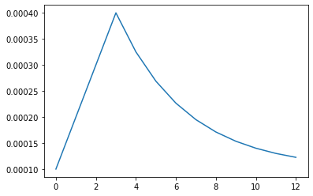
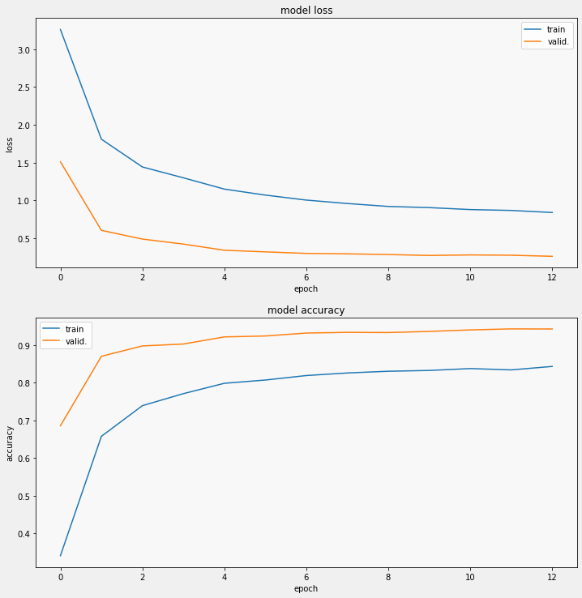
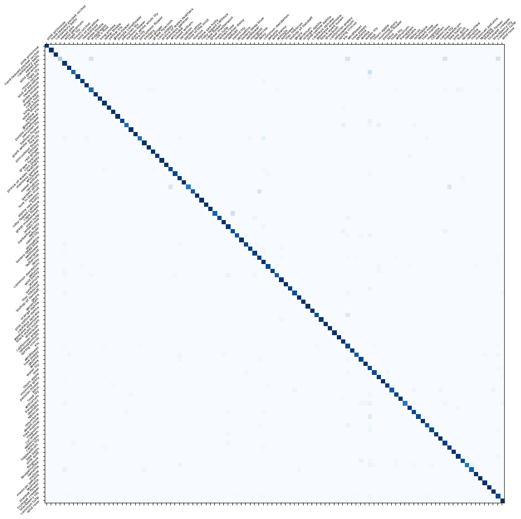

Code
import numpy as np
import tensorflow as tf
import tensorflow_hub as hub
import matplotlib.pyplot as plt
from sklearn.metrics import f1_score, precision_score, recall_score, confusion_matrix
import re
from pathlib import PathDecember 2, 2021
In this post, we’ll go through a workflow in TensorFlow for finetuning a pretrained model for image classification. We’ll use this dataset that contains images of 104 types of flowers as an example. Let’s dive right in.
On GPUs with Tensor Cores (i.e., GPUs with compute capability of at least 7.0) training with mixed precision can provide significant speedups. Mixed precision translates to running operations in float16 if possible while keeping variables and some computations in float32 for numeric reasons. This speeds up reading from memory as well as run times, and often allows to double the batch size.
To use mixed precision in Keras, we need to set a global policy:
Important:
dtype explicitly.tf.keras.Model.fit()), we have to prevent our gradients from underflowing to zero by using loss scaling. See this guide for more.TensorFlow offers the tf.distribute.Strategy API to easily scale model training onto multiple GPUs, multiple machines, or TPUs. The following three strategies are the most common:
tf.distribute.MirroredStrategy: Use this strategy when using a single machine with one or more GPUs. Replicates the model graph and all variables on each available GPU and distributes the input evenly across all replicas. Each replica calculates the gradients for its input; the gradients are synced across all replicas by summing them so that the same update is made on all replicas.tf.distribute.MultiWorkerMirroredStrategy: Extends the MirroredStrategy to a multi-machine setup. Requires setting up the TF_CONFIG environment variable correctly.tf.distribute.TPUStrategy: The strategy when using Google’s TPUs.Here we’ll use tf.distribute.MirroredStrategy since we want to train on two GPUs. For more on distributed training with TensorFlow, see the corresponding guide.
When using TensorFlow’s tf.data API, we can use AUTOTUNE to automatically optimize the allocation of the CPU budget to speed up the input pipeline. We’ll see soon how this plays out.
BATCH_SIZE = 32 * strategy.num_replicas_in_sync
IMAGE_SIZE = (331, 331)
DATA_DIR = f"{base_path}/tfrecords-jpeg-{IMAGE_SIZE[0]}x{IMAGE_SIZE[1]}"
CLASSES = ['pink primrose', 'hard-leaved pocket orchid', 'canterbury bells', 'sweet pea', 'wild geranium', 'tiger lily', 'moon orchid', 'bird of paradise', 'monkshood', 'globe thistle', # 00 - 09
'snapdragon', "colt's foot", 'king protea', 'spear thistle', 'yellow iris', 'globe-flower', 'purple coneflower', 'peruvian lily', 'balloon flower', 'giant white arum lily', # 10 - 19
'fire lily', 'pincushion flower', 'fritillary', 'red ginger', 'grape hyacinth', 'corn poppy', 'prince of wales feathers', 'stemless gentian', 'artichoke', 'sweet william', # 20 - 29
'carnation', 'garden phlox', 'love in the mist', 'cosmos', 'alpine sea holly', 'ruby-lipped cattleya', 'cape flower', 'great masterwort', 'siam tulip', 'lenten rose', # 30 - 39
'barberton daisy', 'daffodil', 'sword lily', 'poinsettia', 'bolero deep blue', 'wallflower', 'marigold', 'buttercup', 'daisy', 'common dandelion', # 40 - 49
'petunia', 'wild pansy', 'primula', 'sunflower', 'lilac hibiscus', 'bishop of llandaff', 'gaura', 'geranium', 'orange dahlia', 'pink-yellow dahlia', # 50 - 59
'cautleya spicata', 'japanese anemone', 'black-eyed susan', 'silverbush', 'californian poppy', 'osteospermum', 'spring crocus', 'iris', 'windflower', 'tree poppy', # 60 - 69
'gazania', 'azalea', 'water lily', 'rose', 'thorn apple', 'morning glory', 'passion flower', 'lotus', 'toad lily', 'anthurium', # 70 - 79
'frangipani', 'clematis', 'hibiscus', 'columbine', 'desert-rose', 'tree mallow', 'magnolia', 'cyclamen ', 'watercress', 'canna lily', # 80 - 89
'hippeastrum ', 'bee balm', 'pink quill', 'foxglove', 'bougainvillea', 'camellia', 'mallow', 'mexican petunia', 'bromelia', 'blanket flower', # 90 - 99
'trumpet creeper', 'blackberry lily', 'common tulip', 'wild rose'] In this example, the data is available in multiple TFRecord files. TFRecord is an efficient format for storing a sequence of binary records allowing very fast I/O operations. To easily stream the contents of one or more TFRecord files, we can use the tf.data API (more specifically, the tf.data.TFRecordDataset class; we just need to pass in a list of filenames).
<tf.Tensor: shape=(), dtype=string, numpy=b'\n\xa3\xb6\x02\n\x13\n\x02id\x12\r\n\x0b\n\t05fa7d4ca\n\x0e\n\x05class\x12\x05\x1a\x03\n\x01f\n\xfa\xb5\x02\n\x05image\x12\xef\xb5\x02\n\xeb\xb5\x02\n\xe7\xb5\x02\xff\xd8\xff\xe0\x00\x10JFIF\x00\x01\x01\x01\x01,\x01,\x00\x00\xff\xdb\x00C\x00\x02\x01\x01\x0
<tf.Tensor: shape=(), dtype=string, numpy=b'\n\xaf\xde\x03\n\x13\n\x02id\x12\r\n\x0b\n\tbafaca028\n\x0e\n\x05class\x12\x05\x1a\x03\n\x01\x08\n\x86\xde\x03\n\x05image\x12\xfb\xdd\x03\n\xf7\xdd\x03\n\xf3\xdd\x03\xff\xd8\xff\xe0\x00\x10JFIF\x00\x01\x01\x01\x01,\x01,\x00\x00\xff\xdb\x00C\x00\x02\x01\x01
<tf.Tensor: shape=(), dtype=string, numpy=b'\n\xee\xc5\x03\n\x0e\n\x05class\x12\x05\x1a\x03\n\x01\x0e\n\xc5\xc5\x03\n\x05image\x12\xba\xc5\x03\n\xb6\xc5\x03\n\xb2\xc5\x03\xff\xd8\xff\xe0\x00\x10JFIF\x00\x01\x01\x01\x01,\x01,\x00\x00\xff\xdb\x00C\x00\x02\x01\x01\x01\x01\x01\x02\x01\x01\x01\x02\x02\x0As we can see, we’ll have to decode the examples. For this purpose, we can use the following function that takes in a raw example and returns the image and its class label. Since we’ll use MixUp later, we need to return the one-hot encoded class labels. Also, we ignore the id feature since we won’t need it.
def parse_tfrecord(example):
features = {
"image": tf.io.FixedLenFeature([], tf.string),
"class": tf.io.FixedLenFeature([], tf.int64),
"id": tf.io.FixedLenFeature([], tf.string),
}
example = tf.io.parse_single_example(example, features)
image = tf.image.decode_jpeg(example['image'], channels=3)
image = tf.reshape(image, [*IMAGE_SIZE, 3])
label = tf.one_hot(tf.cast(example['class'], tf.int32), len(CLASSES))
return image, labelNow we can read in the entire dataset using the function below. To benefit from parallelization (if possible), we can set num_parallel_reads=AUTO. For more on defining and reading TFRecords, see here.
While stratified k-fold cross-validation (CV) would certainly be the best way to evaluate our training procedure, we’ll opt for a basic train-validation split to avoid unnecessary energy consumption and keep things simple. Also, the dataset already comes with predefined folders containing the images for training, validation and testing, respectively. To load the images, we simply gather the corresponding filenames.
TRAIN_FILENAMES = tf.io.gfile.glob(DATA_DIR + '/train/*.tfrec')
VALID_FILENAMES = tf.io.gfile.glob(DATA_DIR + '/val/*.tfrec')
def count_data_items(filenames):
# the name of the .tfrec files contains the number of images in the corresponding file
# 00-224x224-462.tfrec = 462 examples
n = [int(re.compile(r"-([0-9]*)\.").search(filename).group(1)) for filename in filenames]
return np.sum(n)
num_training_images = count_data_items(TRAIN_FILENAMES)
num_validation_images = count_data_items(VALID_FILENAMES)
print("Training images:", num_training_images)
print("Validation images:", num_validation_images)Training images: 12753
Validation images: 3712For data augmentation, we begin by defining some basic transformations using tf.image methods. Note that we could also do this in Keras layers. To show that we can use Keras layers for preprocessing, we’ll add a RandomCrop layer at the beginning of our model (we could have done this in the data augmentation function too).
We also implement the MixUp augmentation technique.
MIXUP_FRAC = 0.4
def mixup(img, label):
def _interpolate(b1, b2, t):
return t*b1 + (1-t)*b2
n = np.rint(MIXUP_FRAC * len(img)).astype(np.int32)
t = np.round(np.random.uniform(0.5, 0.8), 2)
img = tf.image.convert_image_dtype(img, tf.float32)
img1, label1 = img[:n], label[:n]
img2, label2 = img[1:n+1], label[1:n+1]
interp_img = _interpolate(img1, img2, t)
interp_label = _interpolate(label1, label2, t)
img = tf.concat([interp_img, img[n:]], axis=0)
label = tf.concat([interp_label, label[n:]], axis=0)
img = tf.image.convert_image_dtype(img, tf.uint8)
return img, labelNow we are ready to define the functions for loading the training and validation data. We begin with get_training_dataset():
Let’s go through the method calls:
map(augment_data): We start with applying the augmentations defined in the augment_data function.repeat(): In practice, we often want to train for a fixed number of training examples instead of a fixed number of epochs. We call repeat() to avoid problems when we overestimate the size of our training dataset. If we underestimate the number of training examples, the remaining examples simply carry over to the next epoch. Note that computing the required number of steps for a (virtual) epoch is easy: steps_per_epoch = num_training_examples // batch_size.shuffle(): In general, we want batches that contain different training examples (as opposed to batches with many similar examples, e.g., only images of roses). Thus, we randomize the examples by shuffling within a buffer that is (much) larger than the batch size. The size of the buffer should depend on how ordered the dataset is. (If the dataset is sorted by label, the buffer size has to cover the entire dataset. In that case, we should already shuffle the data when preparing the training dataset.)batch(): Creates the batches of our desired batch size. The best batch size usually is the largest batch size that fits our machine.map(mixup): Since our implementation of mixup works with batches, we have to make the corresponding map call after the batch() operation.prefetch(): Prefetching uses a background thread to prefetch elements from the input dataset needed for the next training step while the current training step is executed. We can set the number of elements that should be prefetched to tf.data.AUTOTUNE which automatically determines the value at runtime.More on optimizing the input pipeline using the tf.data API can be found in this guide.
Finally let’s have a look at some examples (normally we would have inspected the images right away, of course, but we skipped this step for the sake of brevity).
def display_example(image, oh_labels=None, fontsize=13):
plt.imshow(image)
if oh_labels is not None:
label_idxs = np.nonzero(oh_labels)[0]
labels = np.array(CLASSES)[label_idxs]
vals = list(map(str, list(oh_labels[label_idxs])))
title = "\n".join(" ".join(lb) for lb in zip(vals, labels))
plt.title(title, fontsize=fontsize)
plt.show();def display_examples(images, oh_labels=None, figsize=(10, 10), fontsize=13, axis_off=True):
plt.figure(figsize=figsize)
for i in range(9):
ax = plt.subplot(3, 3, i+1)
plt.imshow(images[i])
if oh_labels is not None:
label_idxs = np.nonzero(oh_labels[i])[0]
labels = np.array(CLASSES)[label_idxs]
vals = list(map(str, list(oh_labels[i][label_idxs])))
title = "\n".join(" ".join(lb) for lb in zip(vals, labels))
plt.title(title, fontsize=fontsize)
if axis_off:
plt.axis("off")
plt.tight_layout()When it comes to choosing a pretrained model, there are a lot of great options. Here, we’ll just use a model from the EfficientNet family that is available in tf.keras.applications (if a model is not yet available within Keras, it can usually be downloaded from the TensorFlow Hub). In particular, we’ll use a pretrained EfficientNetB3 which takes input images of shape (300, 300, 3). See here for the original paper and here for some practical information regarding finetuning EfficientNets.
A few notes:
include_top=False.trainable flag to True.[0,1] or [-1, 1]), we use a Lambda layer that wraps the preprocess_input function that comes with the model.The layers that follow the pretrained model are simple:
GlobalAveragePooling2D averages the values in each channel of the final feature map. Note that this averaging procedure removes positional information that is present in the channels (in classification tasks this usually doesn’t matter; however, it is generally not a good choice in tasks like object detection).Dropout layer to reduce overfitting.Dense layer, combined with the softmax activation, allows us to obtain the class probabilities.To apply the distribution strategy discussed earlier, we have to define the model within a corresponding context manager (with strategy.scope():).
with strategy.scope():
pretrained_model = tf.keras.applications.EfficientNetB3(weights="imagenet", include_top=False, input_shape=[300, 300, 3])
pretrained_model.trainable = True
model = tf.keras.Sequential([
tf.keras.layers.InputLayer((331, 331, 3)),
tf.keras.layers.RandomCrop(height=300, width=300),
tf.keras.layers.Lambda(lambda data: tf.keras.applications.efficientnet.preprocess_input(tf.cast(data, tf.float32)), input_shape=[300, 300, 3]),
pretrained_model,
tf.keras.layers.GlobalAveragePooling2D(),
tf.keras.layers.Dropout(0.2),
tf.keras.layers.Dense(len(CLASSES), name="last_dense"),
tf.keras.layers.Activation("softmax", dtype="float32", name="predictions")
])
model.compile(
optimizer='adam',
loss = 'categorical_crossentropy',
metrics=['accuracy'],
)
model.summary()Downloading data from https://storage.googleapis.com/keras-applications/efficientnetb3_notop.h5
43941888/43941136 [==============================] - 0s 0us/step
43950080/43941136 [==============================] - 0s 0us/step
Model: "sequential"
_________________________________________________________________
Layer (type) Output Shape Param #
=================================================================
random_crop (RandomCrop) (None, 300, 300, 3) 0
_________________________________________________________________
lambda (Lambda) (None, 300, 300, 3) 0
_________________________________________________________________
efficientnetb3 (Functional) (None, 10, 10, 1536) 10783535
_________________________________________________________________
global_average_pooling2d (Gl (None, 1536) 0
_________________________________________________________________
dropout (Dropout) (None, 1536) 0
_________________________________________________________________
last_dense (Dense) (None, 104) 159848
_________________________________________________________________
predictions (Activation) (None, 104) 0
=================================================================
Total params: 10,943,383
Trainable params: 10,856,080
Non-trainable params: 87,303
_________________________________________________________________It can be tricky to find a learning rate that works well in a finetuning task. Let’s try the following learning schedule that combines warm-up period and an exponential decay. The implementation below is an example:
EPOCHS = 13
start_lr = 0.0001
min_lr = 0.0001
max_lr = 0.0002 * strategy.num_replicas_in_sync
rampup_epochs = 3
sustain_epochs = 0
exp_decay = 0.75
def lrfn(epoch):
if epoch < rampup_epochs:
return (max_lr - start_lr)/rampup_epochs * epoch + start_lr
elif epoch < rampup_epochs + sustain_epochs:
return max_lr
else:
return (max_lr - min_lr) * exp_decay**(epoch-rampup_epochs-sustain_epochs) + min_lr
lr_callback = tf.keras.callbacks.LearningRateScheduler(lambda epoch: lrfn(epoch), verbose=True)
rang = np.arange(EPOCHS)
y = [lrfn(x) for x in rang]
plt.plot(rang, y);
Another option that can work very well is using differential learning rates (i.e., different learning rates for different layers of the model). Intuitively, we’ll want low learning rates for the pretrained layers and a normal learning rate for the layers of our custom classification head. Note that differential learning rates can be combined with a learning rate scheduler.
def display_training_curves(training, validation, title, subplot):
if subplot % 10 == 1:
plt.subplots(figsize=(10,10), facecolor='#F0F0F0')
plt.tight_layout()
ax = plt.subplot(subplot)
ax.set_facecolor('#F8F8F8')
ax.plot(training)
ax.plot(validation)
ax.set_title('model '+ title)
ax.set_ylabel(title)
ax.set_xlabel('epoch')
ax.legend(['train', 'valid.'])
Let’s have a look at some predictions on the validation data.
def display_predictions(images, oh_labels, preds, figsize=(10, 10), fontsize=13, axis_off=True):
plt.figure(figsize=figsize)
for i in range(9):
ax = plt.subplot(3, 3, i+1)
plt.imshow(images[i])
if oh_labels is not None:
label_idx = np.argmax(oh_labels[i])
label = np.array(CLASSES)[label_idx]
pred = np.array(CLASSES)[preds[i]]
title = f"Correct: {label}\nPredicted: {pred}"
color = "red" if label != pred else "black"
plt.title(title, fontsize=fontsize, color=color)
if axis_off:
plt.axis("off")
plt.tight_layout()Additionally, we can also plot the corresponding confusion matrix:
cm_dataset = get_validation_dataset()
img_dataset = cm_dataset.map(lambda image, label: image)
lbl_dataset = cm_dataset.map(lambda image, label: label).unbatch()
cm_correct_lbls = next(iter(lbl_dataset.batch(num_validation_images))).numpy()
cm_correct_lbls = np.argmax(cm_correct_lbls, axis=-1)
cm_probs = model.predict(img_dataset, steps=VALIDATION_STEPS)
cm_preds = np.argmax(cm_probs, axis=-1)
score = f1_score(cm_correct_lbls, cm_preds, labels=range(len(CLASSES)), average='macro')
precision = precision_score(cm_correct_lbls, cm_preds, labels=range(len(CLASSES)), average='macro')
recall = recall_score(cm_correct_lbls, cm_preds, labels=range(len(CLASSES)), average='macro')
print(f"F1 score:\t{score:.3f}\nPrecision:\t{precision:.3f}\nRecall:\t\t{recall:.3f}")F1 score: 0.941
Precision: 0.953
Recall: 0.936As a final step, we want to obtain the model’s predictions on the test set.
def parse_tfrecord_test(example):
features = {
"image": tf.io.FixedLenFeature([], tf.string),
"id": tf.io.FixedLenFeature([], tf.string),
}
example = tf.io.parse_single_example(example, features)
image = tf.image.decode_jpeg(example['image'], channels=3)
image = tf.reshape(image, [*IMAGE_SIZE, 3])
idnum = example["id"]
return image, idnum
def get_test_dataset():
dataset = (
tf.data.TFRecordDataset(TEST_FILENAMES, num_parallel_reads=AUTO)
.map(parse_tfrecord_test, num_parallel_calls=AUTO)
.batch(BATCH_SIZE)
.prefetch(AUTO)
)
return datasettest_dataset = get_test_dataset()
test_img_dataset = test_dataset.map(lambda img, idn: img)
test_ids_dataset = test_dataset.map(lambda img, idn: idn).unbatch()
test_ids = next(iter(test_ids_dataset.batch(num_test_images))).numpy().astype("U")
probs = model.predict(test_img_dataset, steps=TEST_STEPS)
preds = np.argmax(probs, axis=-1)